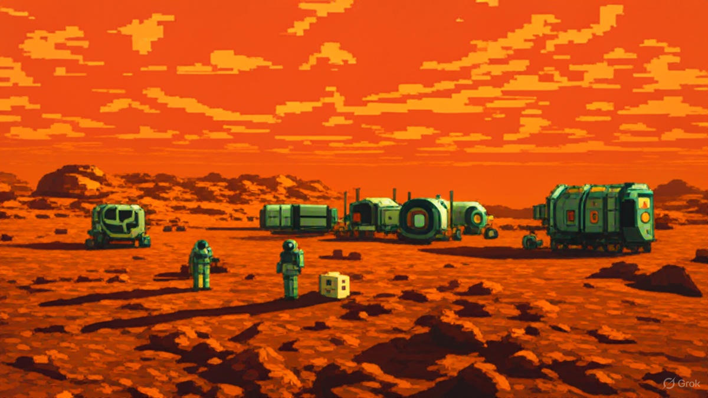
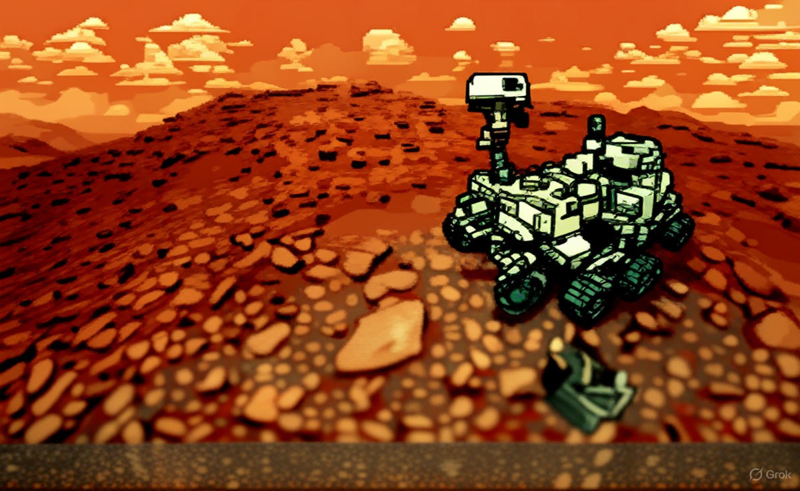
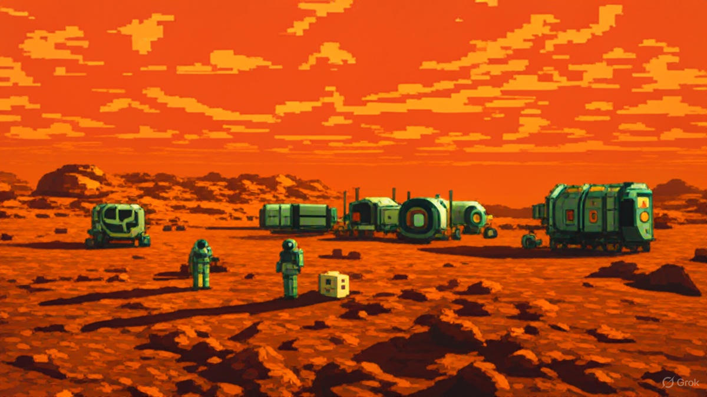
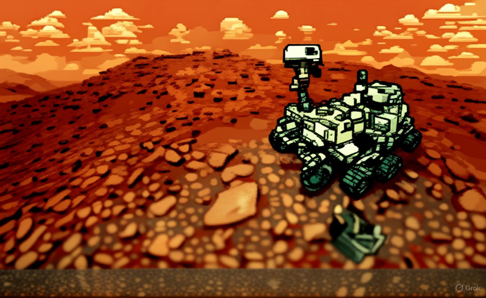
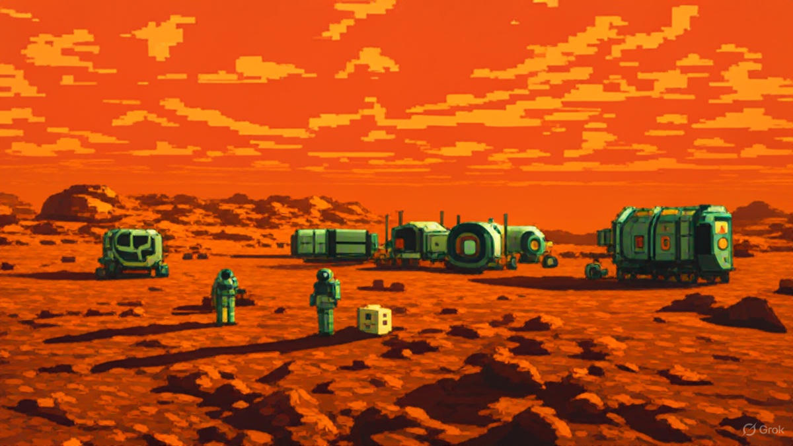
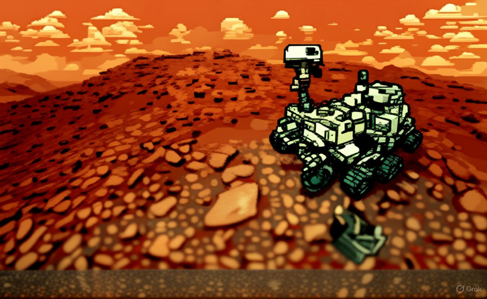

Type: Terrestrial planet
Diameter: ~6,779 km
Mass: ~0.11× Earth’s mass
Moons: 2 (Phobos, Deimos)
Length of day: ≈ 24.6 hours
Length of year: ≈ 687 Earth days
Distance from Sun: ~228 million km
Average temperature: ≈ −63°C
Composition: Rock, iron core, thin CO₂ atmosphere
Mars has a thin carbon dioxide atmosphere with seasons, dust storms, and polar ice caps. Its surface features huge volcanoes, canyons, and signs that liquid water existed in the past.
Mars has been the target of many missions: orbiters, landers, and rovers (like Viking, Pathfinder, Spirit, Opportunity, Curiosity, Perseverance) that have mapped terrain, analyzed rocks, and searched for past habitability.
Multiple missions and sample-return efforts are planned; international programs and commercial initiatives aim to continue surface exploration and prepare for future human missions.

